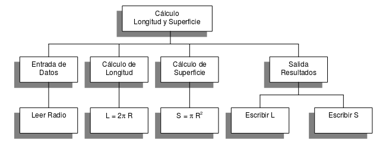

A partir de los requerimientos, resultados del análisis, empieza la etapa de diseño donde tenemos que construir un algoritmo que resuelva el problema
Definición de algoritmo
Un algoritmo es un conjunto de acciones que especifican la secuencia de operaciones realizar, en orden, para resolver un problema.
Los algoritmos son independientes tanto del lenguaje de programación como del ordenador que los ejecuta.
Las características de los algoritmos son:
Un algoritmo debe ser preciso e indicar el orden de realización de cada paso.
Un algoritmo debe estar definido. Si se sigue un algoritmo dos veces, se debe obtener el mismo resultado cada vez.
Un algoritmo debe ser finito. Si se sigue un algoritmo, se debe terminar en algún momento; o sea, debe tener un número finito de pasos.
Ejemplo tradicional de un algoritmo: Cambiar la rueda pinchada de un coche.
Etapa de diseño
Aunque en la solución de problemas sencillos parezca evidente la codificación en un lenguaje de programación concreto, es aconsejable realizar el diseño del algoritmo, a partir del cual se codifique el programa.
La soluciones a problemas más complejos pueden requerir muchos más pasos. Las estrategias seguidas usualmente a la hora de encontrar algoritmos para problemas complejos son:
Partición o divide y vencerás:
consiste en dividir un problema grande en unidades más pequeñas que puedan ser resueltas individualmente.
Ejemplo: Podemos dividir el problema de limpiar una casa en labores más simple correspondientes a limpiar cada habitación.
Resolución por analogía:
Dado un problema, se trata de recordar algún problema similar que ya esté resuelto. Los dos problemas análogos pueden incluso pertenecer áreas de conocimiento totalmente distintas.
Ejemplo: El cálculo de la media de las temperaturas de las provincias andaluzas y la media de las notas de los alumnos e una clase se realiza del mismo modo.
La descomposición del problema original en subproblemas más simples y a continuación dividir estos subproblemas en otros mas simples se denomina diseño descendente (top-down design). Tras la primera descripción del problema (poco específica), se realiza una siguiente descripción mas detallada con mas pasos concretos. Este proceso se denomina refinamiento del algoritmo.
 Diseño del algoritmo
Diseño del algoritmo
Ejemplo: Leer el radio de un circunferencia y calcular e imprimir su superficie y su circunferencia.
Se puede dividir en tres subproblemas más sencillos:
Leer Radio
Calcular Superficie
Calcular Longitud
Escribir resultados
Refinamiento del algoritmo:
Leer Radio
Superficie <- PI * Radio ^ 2
Longitud <- 2 * PI * Radio
Escribir Radio, Longitud, Superficie
Lo podemos ver en un diagrama estructurado:
